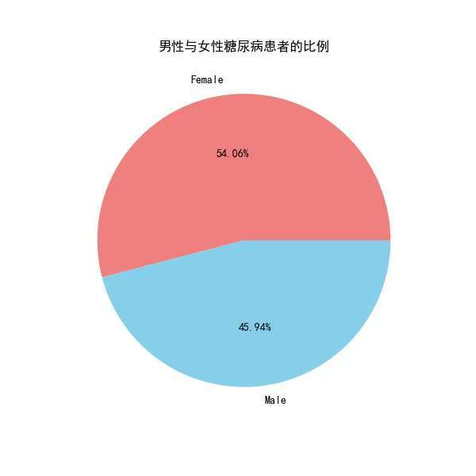
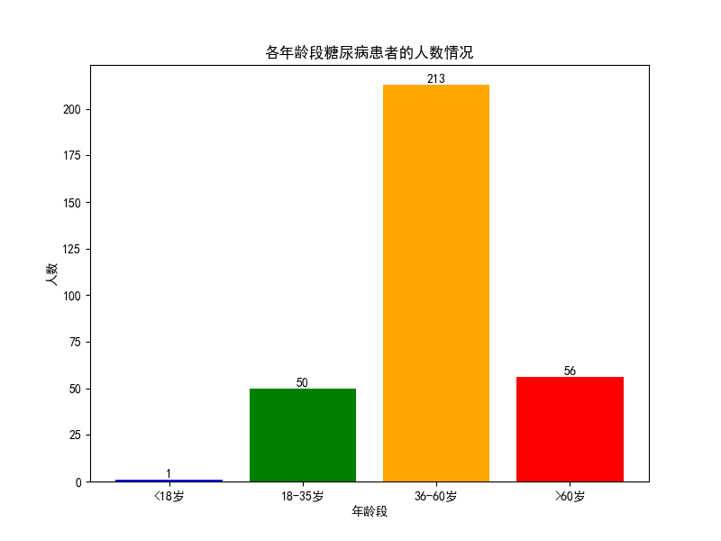
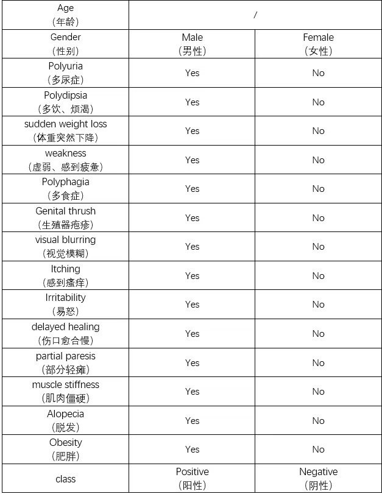
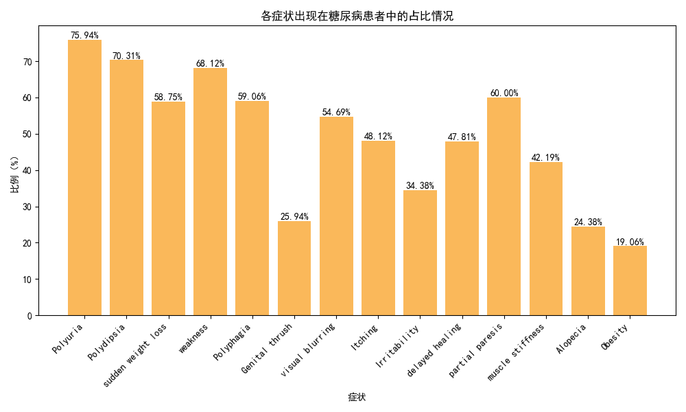

打破数据孤岛，透视隐藏在性别、年龄与并发症状背后的健康密码。用海量真实数据验证机器学习模型的精准度。
基于数字孪生的糖尿病健康管控基座。通过深度整合电子病历、基因数据和生活方式信息，系统不仅能实时呈现健康态势，更具备前瞻性预测能力。

数据底色：样本中女性患者占比 54.06%，男性 45.94%，女性显著高于男性。

代谢功能衰退是主因。高发神经病变与心血管并发症，需定期糖化血红蛋白监测。
压力大、久坐引发胰岛素抵抗。需在企业健康计划中加入代谢综合征筛查。
肥胖与高糖摄入导致2型提前。情绪易怒、厌食需心理与代谢双维度干预。

这些症状可能单独或同时出现。如果出现多个相关症状交叠，意味着微血管或神经已发生不可逆损伤，建议立即启动专家会诊与全面体征评估。
